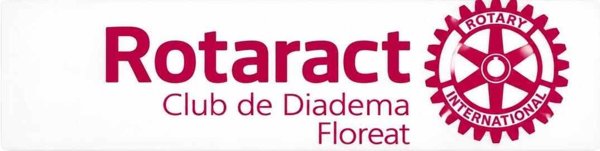
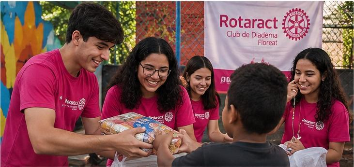
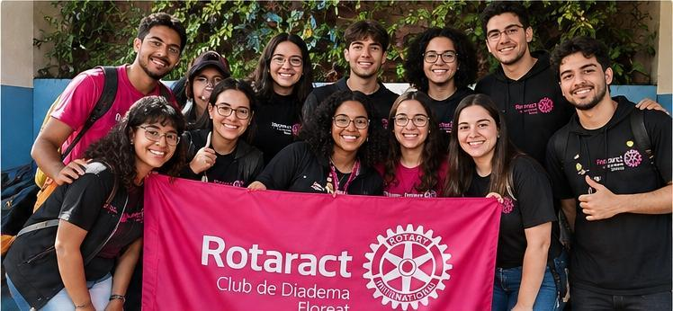
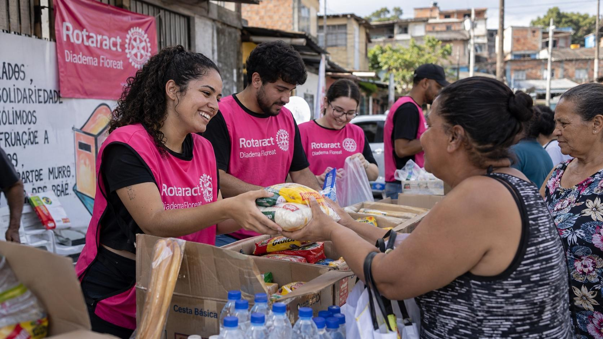

Missão
Desenvolver ações que contribuam para a comunidade e incentivem jovens a participar de projetos sociais.

O Rotaract Club Diadema Floreat reúne jovens e voluntários interessados em desenvolver ações sociais, comunitárias e ambientais na cidade de Diadema.
Conheça nossos projetos
O Rotaract é formado por jovens que desenvolvem projetos, campanhas e atividades voltadas à comunidade. O objetivo é promover participação social, desenvolvimento de lideranças e ações que contribuam para a sociedade.

Desenvolver ações que contribuam para a comunidade e incentivem jovens a participar de projetos sociais.
Ser uma organização reconhecida pela participação dos jovens e pelo impacto positivo de suas ações.
Solidariedade, respeito, responsabilidade, colaboração, cidadania e compromisso com a comunidade.
O clube participa de iniciativas sociais, ambientais e comunitárias realizadas em Diadema.
Participação em campanhas e atividades destinadas a apoiar diferentes necessidades da comunidade.
Apoio a iniciativas relacionadas ao cuidado, proteção e qualidade de vida dos animais.
Desenvolvimento de jovens por meio do voluntariado, trabalho em equipe e participação cidadã.
Nossa equipe é formada por jovens voluntários que trabalham juntos na organização e realização das atividades do clube.

Quer conhecer melhor nossos projetos ou participar de uma ação? Entre em contato através de nossas redes sociais ou faça o seu cadastro.
Localização: Diadema - São Paulo
Instagram: @rotaractdiademafloreat